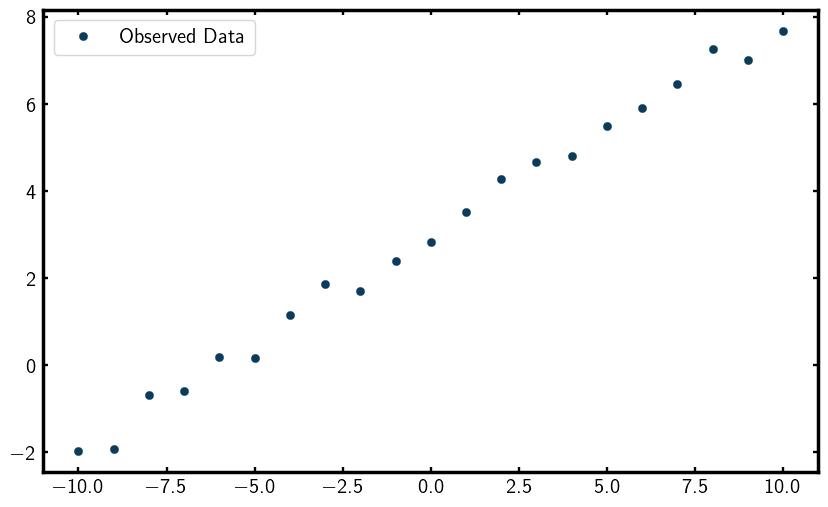

Writing a script with diffpy.cmi
This guide provides a step-by-step walkthrough for creating a basic script using the diffpy.cmi framework.
We will follow the linefit example so you can familiarize yourself with the structure of a CMI script.
If you would like, copy the linefit example to your current working directory by running,
cmi copy linefit
To demonstrate how to fit data in diffpy.cmi, we will start by trying to fit a simple line to some synthetic data.
First, lets install the plotting pack if you haven’t already done so.
cmi install plotting
Now, open up a new Python script and start by importing the necessary modules,
import matplotlib.pyplot as plt
import numpy as np
from scipy.optimize import leastsq
from diffpy.srfit.fitbase import (
FitContribution,
FitRecipe,
FitResults,
Profile,
)
Generate Synthetic Data
Let’s generate some synthetic data to fit, This data will be a simple line with some added noise,
# Generate synthetic data
xobs = np.arange(-10, 10.1)
sigma_yobs = 0.3 * np.ones_like(xobs) * np.random.randn(xobs.size) # random error
yobs = 0.5 * xobs + 3 + sigma_yobs
Lets now visualize the data by plotting it,
plt.figure(figsize=(10, 6))
plt.plot(xobs, yobs, marker='o', linestyle="none", label="Observed Data")
plt.legend()
plt.show()
You should see a scatter plot that looks something like this,
{kind=link}
Profile
Great, now lets begin setting up our fitting framework. We will start by creating a Profile to hold our data.
This is done to encapsulate the observed data so that it can be used in the fitting process.
# Create a Profile to hold the data
linedata = Profile()
linedata.setObservedProfile(xobs, yobs, sigma_yobs)
FitContribution
Now it’s time to define our model in a FitContribution.
A FitContribution is a container that holds the model function and its associated parameters.
Setting Fit Equation
In this case, our model is a simple linear function defined by the equation y = Ax + B,
# Define a FitContribution: linear model A*x + B
linefit = FitContribution("linefit")
linefit.setProfile(linedata)
linefit.setEquation("A * x + B")
To see the parameters we just created, we can print them out,
linefit.show()
This should output something like,
Parameters
------------------------------------------------------------------------------
x [-10. -9. -8. -7. -6. -5. -4. -3. -2. -1. 0. 1. 2. 3.
y [-1.8053485 -1.56263035 -1.11627164 -0.4137478 0.68210214 0.58758801
dy [0.3 0.3 0.3 0.3 0.3 0.3 0.3 0.3 0.3 0.3 0.3 0.3 0.3 0.3 0.3 0.3 0.3 0.3
B None
A None
Initialize Fitting Parameters
Note that A and B are set to None since we haven’t assigned them any initial values yet.
To do that, we can set them like this,
linefit.A = 3
linefit.B = 5
print("Initial A value:", linefit.A.value)
print("Initial B value:", linefit.B.value)
This should output,
Initial A value: 3
Initial B value: 5
FitRecipe
Now that we have our model defined and initlialized, we can create a FitRecipe.
The FitRecipe is the main container that holds all the FitContributions
and manages the fitting process.
# Create a FitRecipe to manage fitting
recipe = FitRecipe()
Adding FitContribution to FitRecipe
We can now add our linefit contribution to the recipe and print out the parameters,
recipe.clearFitHooks()
recipe.addContribution(linefit)
recipe.show()
This should output something like,
Parameters
------------------------------------------------------------------------------
linefit.x [-10. -9. -8. -7. -6. -5. -4. -3. -2. -1. 0. 1. 2.
linefit.y [-1.67605745 -1.19031421 -1.40162608 -0.90829441 0.38607679 0.44
linefit.dy [0.3 0.3 0.3 0.3 0.3 0.3 0.3 0.3 0.3 0.3 0.3 0.3 0.3 0.3 0.3 0.3 0
linefit.B 5
linefit.A 3
Now you can see that the parameters are prefixed with linefit.,
indicating they belong to the linefit contribution. Also, note that A and B now
have initial values assigned.
Add Variables to Fit
With everything set up, we can now mark the parameters we want to refine during the fitting process.
This is done using the .addVar() method of the FitRecipe,
recipe.addVar(recipe.linefit.A)
recipe.addVar(recipe.linefit.B)
To see the variables that will be refined, we can print them out,
print("recipe.A =", recipe.A)
print("recipe.A.value =", recipe.A.value)
print("recipe.values =", recipe.values)
print("recipe.names =", recipe.names)
print("recipe.residual() =", recipe.residual())
This should output something like,
recipe.A = ParameterProxy(A)
recipe.A.value = 3
recipe.values = [3 5]
recipe.names = ['A', 'B']
recipe.residual() = [-78.18212598 -67.62039727 -60.63792074 -52.12278541 -41.97888213
-34.76069913 -27.49568671 -17.88327019 -10.00997001 -1.21702776
6.79454602 15.44637505 21.39664018 32.98689369 40.26685555
47.96728622 57.81169457 65.48416201 73.74878531 81.40669851
90.08765793]
The recipe.residual() method computes the difference between the observed data and the model prediction.
As you can see, the residuals are quite large at this point since we haven’t performed any fitting yet.
To better visualize the residuals, we can plot them,
ycalc = linefit.A.value * xobs + linefit.B.value
plt.figure(figsize=(10, 6))
plt.plot(xobs, yobs, marker='o', linestyle='None', label="Observed Data")
plt.plot(xobs, ycalc, label="Calculated Fit: Ax + B")
plt.legend()
plt.show()
You should see a plot that looks something like this,

As you can see, the initial fit is quite poor, which is expected since we haven’t refined the parameters yet. So… lets refine them!
Perform the Least-Squares Fit
Now we are ready to perform the least squares fitting using the leastsq function from scipy.optimize.
The leastsq function minimizes the sum of squares between the observed data and the model prediction
by adjusting the parameters we marked for refinement. The least-squares algorithm is given by,
This is what is known as the objective function. The objective function is a function that you want to minimize (or maximize) during the fitting process. In this case, the squared difference between the calculated and observed values is what the algorithm will minimize. In theory, our objective function could be anything. You could even customize your own! But for now, we will use least-squares to optimize our fit.
To perform a least-squares regression, we pass the residuals
(recipe.residual), which represent the differences to minimize,
as a function of the current parameter values (recipe.values) to leastsq.
leastsq(recipe.residual, recipe.values)
print("After leastsq:", recipe.names, "-->", recipe.values)
linefit.show()
This should output something like,
After leastsq: ['A', 'B'] --> [0.51240164 3.00692156]
Parameters
------------------------------------------------------------------------------
x [-10. -9. -8. -7. -6. -5. -4. -3. -2. -1. 0. 1. 2. 3.
y [-2.33763938 -1.9018065 -0.9653354 -0.63162421 0.22997984 -0.17955301
dy [0.3 0.3 0.3 0.3 0.3 0.3 0.3 0.3 0.3 0.3 0.3 0.3 0.3 0.3 0.3 0.3 0.3 0.3
A 0.512401638015315
B 3.006921559716823
You can see that the parameters A and B have been updated to values that better fit the data.
Lets print the residual sum of squares to see how well the fit performed,
print("recipe.residual() =", recipe.residual())
This should output something like,
recipe.residual() = [ 0.83916097 0.6429651 -0.76778838 -0.89453514 0.42300657 0.97663332
-1.50946072 -0.21983212 -0.3464077 -1.84471305 -0.11995115 1.14584239
1.04321154 0.92606764 0.53831321 -0.06905766 -0.02106872 -0.78551651
1.3405239 -0.01692016 -1.28047336]
As you can see, the residuals have significantly decreased, indicating a much better fit to the data.
Lets visualize the final fit by plotting the observed data and the fitted line,
ycalc = linefit.A.value * xobs + linefit.B.value
plt.figure(figsize=(10, 6))
plt.plot(xobs, yobs, marker='o', linestyle='None', label="Observed Data")
plt.plot(xobs, ycalc, label="Fitted Line: Ax + B")
plt.legend()
plt.show()
You should see a plot that looks something like this,

Wow! Look at that fit!
FitResults
To summarize the fitting results, we can create a FitResults object and pass our recipe to it,
# Create FitResults to summarize the fit
results = FitResults(recipe)
print(results)
This should output something like,
Overall
------------------------------------------------------------------------------
Residual 12.59360793
Contributions 12.59360793
Restraints 0.00000000
Chi2 12.59360793
Reduced Chi2 0.66282147
Rw 0.05372518
Variables
------------------------------------------------------------------------------
A 5.18663792e-01 +/- 1.08112496e-02
B 2.96331208e+00 +/- 6.54653670e-02
Variable Correlations greater than 25%
------------------------------------------------------------------------------
No correlations greater than 25%
The value Rw is a measure of the quality of the fit, with lower values indicating a better fit.
How to Fix Parameters
Note
Because in this example we are fitting a simple line with only two parameters,
we can select any values for A and B and still get a good fit. However,
we demonstrate how to fix parameters for educational purposes.
There are two ways to fix parameters in diffpy.cmi, the first one is by
using the .fix() method on a parameter,
recipe.fix(B=0)
print("Free:", recipe.names, "-->", recipe.values)
print("Fixed:", recipe.fixednames, "-->", recipe.fixedvalues)
This should output something like,
Free: ['A'] --> [0.51315825]
Fixed: ['B'] --> [0]
The other way to fix parameters is by setting fixed=True when adding the variable
with .addVar() to the recipe,
recipe.addVar(recipe.linefit.B, fixed=True)
print("Free:", recipe.names, "-->", recipe.values)
print("Fixed:", recipe.fixednames, "-->", recipe.fixedvalues)
This should output something like,
Free: ['A'] --> [0.49144738]
Fixed: ['B'] --> [5]
Tips for Fitting Data
Before we wrap up this tutorial, here are some tips on selecting and refining parameters for fitting.
Selecting Good Parameters
Because the leastsq regressor is a local optimization, you typically need to provide good starting values
for the parameters. The process of finding good starting values is an art which will be carefully crafted
over time as you gain experience with fitting data. Use your scientific intuition to
select good starting values!
Refining Strategy
Oftentimes, you need to fix certain parameters during the fitting process to find a solution that better fits your data. This is a common practice in data fitting to improve the stability of the fit.
Typically, the process goes like this:
Refining Strategy
Good initial guess: Start with good initial guesses for all parameters.
Refine on Parameters: Refine all (or a subset of) parameters. If you see large correlations or instability, try again with a different initial guess or a different subset of parameters.
Fixing Parameters: Fix some parameters based on the results from step 2.
Refine again: Refine the remaining free parameters.
This process is where you spend most of your time when fitting data.
Words of Encouragement
Remember, all the computer knows how to do is minimize a value. It has no understanding of the physical meaning of the parameters. That is why we need smart people like yourself to guide the fitting process!
What’s Next?
Now that you have a basic understanding of how to write a script using diffpy.cmi,
you can explore more advanced examples such as fitting a gaussian (gaussianfit example) or fitting intensity (intensityfit example) data with diffpy.cmi.
To see available examples, run
cmi info examples
To copy an example to your current working directory, use the command
cmi copy <example-name>
Happy fitting!